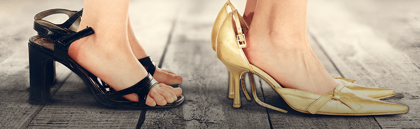
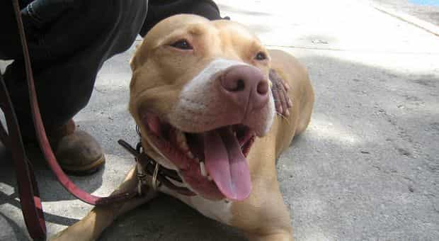

Over the years, women have been accurately compared to many things—roses, milk, T-shirts, bread, and just about everything else that depreciates in value, spoils quickly, or loses it’s shine at an accelerated rate.
Well I’ve got another log to throw onto the fire: women who are perpetually single (read: sluts) are like abandoned dogs waiting to be rescued. There are way too many similarities between the two not to point them out.
1. The single life is the shelter
Dogs
Dogs don’t want to be in shelters. They want a permanent home with a family because it’s a better life. Granted, a dog can’t say out loud that they want a family, but they all do. You can tell in their behavior in both environments. Those Sarah McLachlan commercials (which I absolutely cannot watch) tell you all you need to know about how dogs feel about shelter life.
A shelter is unpredictable. Some of the staff treats them nicely and some of them not so much. Maybe they get walked three times one day, and only once the next. And when they have to watch other dogs getting adopted, they wonder to themselves, “When is someone going to adopt me? Why doesn’t anybody pick me? Is there something wrong with me?”
This is exactly how perpetually single women feel
Women
Women don’t want to be single. They want a permanent relationship with a man because it’s a better life than sleeping around, worrying about STDs, worrying about being found out, or worrying about getting pregnant because she doesn’t remember if Derrick used a condom last night or if she forgot to take the pill yesterday.
Today’s women will brag about how they just #LuvDaSingleLyfe! and how they don’t like being locked down but they’re lying through their teeth. Every woman wants to be a relationship of consequence, no matter what they say out loud.
The single life is highly unpredictable for women. Some men treat her great, some treat her like dog shit. Some men are married, some are players. Some are around a lot, others only once a month. And when they watch their friends getting commitments from their boyfriends or getting married, they think to themselves “When am I going to get married? Why can’t I find a boyfriend? Is there something wrong with me?”
2. One size does not fit all

Dogs
As a potential dog owner, you have to understand the differences in breeds. You can’t treat them or train them all the same, and have to do your research beforehand. For example, German Shepherds need a lot of exercise because they’re working dogs, Pomeranians don’t because they’re mainly for companionship. If you keep a German Shepherd cooped up in a small apartment all day, they’re gonna tear up your house, drink out of your toilet, and pee on your floor because of the pent up energy. A Pom would be just fine.
Women
We all know that most women are hoes and that their operating systems default to slutty behavior which manifests into the same ho tendencies. But they’re not all the same in terms of personality traits and what makes them tick.
Pomeranians don’t need much exercise
You might have a woman who’ll comply the first time you simply tell her to “lower your voice.” Then you might meet a woman who needs to be told to shut the fuck up while you glare at her in order to get her to stop running off at the mouth. Similarly, there are women who respond better to negative reinforcement, and there are women who need positive reinforcement more than others.
The point is that you can’t treat them all the same and expect the same results. One size doesn’t fit all with dogs and it damn sure doesn’t with women.
3. They’ve both had plenty of chances
Dogs
A shelter dog’s had more than a few owners in the past but it’s not the pup’s fault. Their past owners didn’t know how to potty train them, how to keep them from tearing up the house, they didn’t want to crate train them, and were afraid to raise their voice or discipline the dog because it’s “mean” or “inhumane.” A lot of times a shelter dog has had multiple owners but because those owners couldn’t handle them, they ended up with another inept owner or eventually back in the shelter.
Women
Sluts have had plenty of boyfriends in the past but were afraid to check her in private and in public. They had no idea how to cultivate good behavior while eliminating bad behavior. They weren’t aware of the fact that women are self destructive by nature and need a firm hand to keep them away from things that could harm her both mentally and physically.
She’s had plenty of boyfriends…none could handle her
A slut’s previous boyfriends were clueless about the real mindset of a woman. They didn’t understand that she’s not looking for Mr. Nice Guy who’s gonna let her do whatever she wants and that what she’s really looking for a strong leader who will lead and discipline her when she steps out of line. Sluts have had plenty of men in their lives, but because those men couldn’t handle them, they either ended up with another clueless boyfriend or eventually back on the market and single again.
4. It’s hard to find a good one
Dogs
Understand you’re almost never going to find a pure breed dog at a shelter. Most dogs in shelters are mutts (which isn’t bad), and can certainly be mitigated if you pay attention to the dog and figure out what you’re dealing with.
The best way to guarantee yourself a pure breed dog is to find a reputable breeder. That way you know exactly what to expect. Pure breed dogs are very expensive because it takes a lot of time and money for breeders to produce quality pups. If you’re willing to spend the coin, it’s worth it, provided you know what you’re buying.
Pure bred German Shepherd pups. Won’t find these at the shelter.
The alternative if you don’t have the extra money is to adopt a shelter dog which, again, isn’t a bad thing but it’s going to take a little more work, time, and attention to get the dog where it needs to be.
Women
Similarly, you also have to understand that the chances of finding a woman with a low notch count or even a virgin in the Western world are slim to none. Most women these days are sluts, which is obviously not good, but if you’ve done your research by consuming red pill content, you can avoid a lot of the problems that comes with dealing with them. No, it’s not going to be long term, but getting in and out without her taking her pound of flesh is where your overall game is important.
Virginal, quality woman. You won’t find her in a club.
If you live in the West, this is a necessary evil. However, if you want to increase your chances of finding a woman with a low notch count or even a virgin, you can move to another country if you’re willing to making make the financial investment and sacrifice temporary familiarity and comfort during the adjustment period.
Some men say Eastern Europe is a good place to find quality girls. South America, particularly Brazil which is highly endorsed by our own James Maverick, has been said to have a large number of females who haven’t jumped on the carousel. Whatever you decide, do your due diligence if that’s the direction you think you may want go.
5. They need to be saved for a reason
Dogs
Though it’s through no fault of their own (especially strays or abandoned dogs), shelter dogs are in a shelter for a reason. Maybe they bark too much, maybe they attack other dogs, maybe they attack people, maybe they’re not good around children, or maybe they’re not potty trained. Whatever the case may be, they’re not in a shelter for no reason.
Fortunately for these dogs, they can be rehabilitated to become ideal pets for people looking to adopt them.

Most shelters are great at rehabilitating dogs
Women
A woman who is perpetually single is single for a reason but unlike dogs, she bears all responsibility for her relationship status or lack thereof. People around her will tell her she’s a great catch, or that Mr. Right is out there somewhere, or that her last boyfriend made a mistake when he dumped her, but they don’t always know the whole story. She might be an insufferable bitch, she could have expensive habits, she could be a drug addict, alcoholic, she might have daddy issues, or she might be a serial cheater. At the end of the continuously single woman were such a catch she’d have been caught already.
Unfortunately for these women, they can never be rehabilitated to become ideal mates for men looking for long-term relationships.
6. They require heavy research
Dogs
Before you decide whether you want to buy a dog from a reputable breeder or adopt a shelter dog, you have to do your research. Find about about different breeds, their dietary and grooming needs, how much exercise they need, how much mental stimulation they need, what their lifespan is, what disease and conditions they’re prone to, etc. At that point you’re ready to either go to a shelter or contact a breeder.
Women
Before you hit the dating scene, you’ve gotta do your research which is finding and obtaining red pill related material. You need to bookmark Return Of Kings, Illimitablemen, the Roosh V Forum, The Rational Male, and so forth and consume this material regularly. There are plenty of other sites out there you can supplement them with but starting with these four will put you on the right track. You also need to watch guys like Tom Leykis, the late great Patrice O’Neal, and yours truly.
When you feel like you’ve got a good handle on things, you’re ready to either start dating around or start the process of becoming an expat.
7. Their flaws are easily concealed through the internet
Dogs
The very worst places to get a dog is off of Craigslist or other online classified sites like it. You see it all the time: “I’m moving and my new place doesn’t accept animals” or “My boyfriend’s allergic to my dog” DO NOT FALL FOR THIS AND DO NOT TAKE THESE DOGS. They’re giving their dog away because it is menace and they’re looking for someone else to clean up the mess they made with their pet.
You’re asking for trouble if you take a dog home from here
People never give away dogs that are “sweet, loving, and just the perfect pet!” There’s something seriously wrong with it which is why they’re trying to get rid of it.
Women
The worst place to find a quality woman are Tinder, Plenty Of Fish, OkCupid and other online hookup apps masquerading as “dating sites.” The bar or the club are two places you should avoid when it comes to a long-term relationship.
Like the dog on Craigslist, she’s at the bar or club because men of value don’t want her. If she were such a good woman and such a catch she’d have dudes lined up around the block without ever having stepped foot in a bar or a club. Further, we all know that women on dating sites are epic sluts. They’re not there looking for love, they’re there looking for dick regardless of what their profile says. There’s something seriously wrong with these women which is why the quality men they managed to fool for a short time got rid of them.
Conclusion
Shelter dogs and sluts are the same animal. Yes, there are a few slight differences between them but by and large you can apply the same principles to both. You can get what you want out of them if you know what you’re doing, but if you don’t your life will be turned upside down in many ways.
Be sure you know everything before making this important decision in your life.
Watch the podcast version of this article below:
Tune into Donovan’s show, TSR: Live with Donovan Sharpe, weekday afternoons at 5EST/2PST on YouTube. Listen or watch all episodes on thesharpereality.com, itunes, or Soundcloud.
Read Next: 8 Essential Rules For Banging A Single Mom